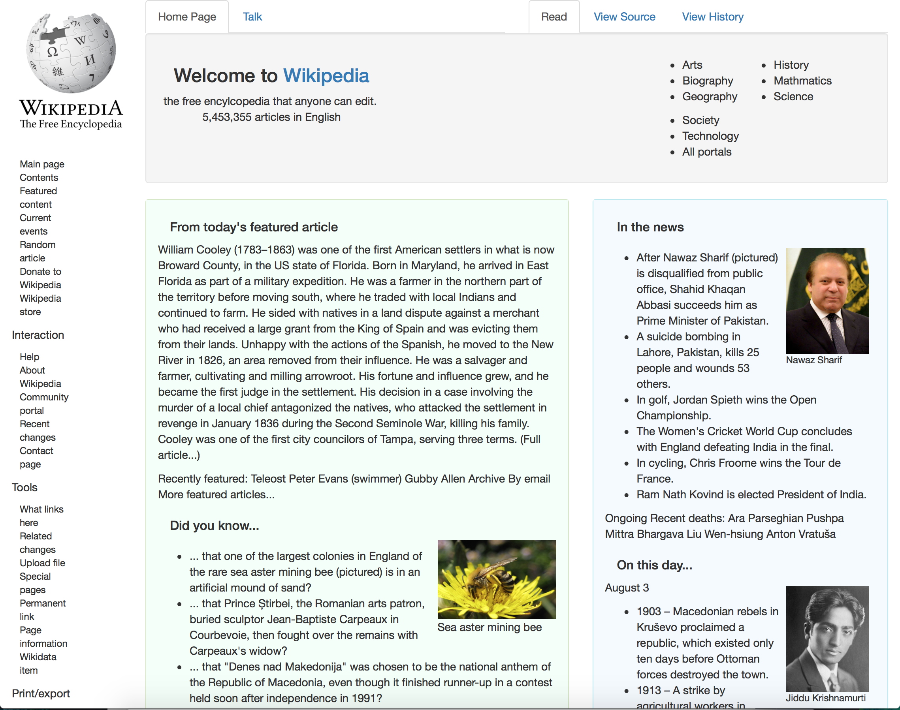

Current Projects
The following are my previous projects, for your viewing convenience. Author recommendations are indicated by the green text. Enjoy!
Featured Projects
Cherry Blossom Dreaming

Wiki Clone

Last Resort

Complete Project List
- Rebuilt Wiki Page: Saving the best for last, I recreated a Wikipedia page, making free use of columns, rows, tabs, grids, and more div classes than ever before! The end result is shy of perfection, but many elements are gratifyingly similar to the original. Enjoy! (Cowriter: E.Belmonti; Tools: Git, CSS, HTML, Bootstrap)
- Cherry Blossom Dreaming: An enjoyable page extolling the virtues of vacationing in Japan during Cherry Blossom season. Now I can't wait to go!(Cowriter: E.Belmonti; Tools: Git, CSS, HTML, and Bootstrap)
- Week in Review: Applying Bootstrap to text (provided by Epicodus) was a revelation after attempting to create similar effects using only CSS and HTML! Thorough exploration of div classes and basic styling elements.(Cowriter: E.Belmonti; Tools: Git, CSS, HTML, and Bootstrap)
- Warm Hearted Home Needed: Basic adoption page for animal rescue involving practice with columns, images, and background effects. Highlight: "Neville the Puggle." (Cowriter: E.Zakrewski; Tools: Git, CSS, HTML)
- Kitchen Renovations: Page regarding kitchen renovations implementing use of floats with a column each for: before, during, and after renovation. (Cowriter: E.Zakrewski; Tools: Git, CSS, HTML)
- Gwe are Gwar: Fan website highlighting art rock band Gwar in which we practiced floats and box models. (Cowriter: E.Zakrewski; Tools: Git, CSS, HTML)
- Guilty Pleasures: Website building exercise focusing on styling with selectors, with the first inclusion of an "About Me" section. (Cowriter: E.Zakrewski; Tools: Git, CSS, HTML)
- State Bored Exams: Further styling with classes practice updated later with inclusion of div classes. (Cowriter: E.Zakrewski; Tools: Git, CSS, HTML)
- Cupcake Shack: Three page webpage created for a cupcake shop including photos, background colors, linked pages, and styling with classes. (Cowriter: E.Zakrewski; Tools: Git, CSS, HTML)
- Last Resort: Design for dsytopic resort property off the coast of Japan incorporating music, linked media, photos, and branching versions. The last vacation you'll ever want to take! Definitely view with your sound on. (Cowriter: R.Furry; Tools: Git, CSS, and HTML)
- Adventures of Fluffy and Thorfeld: Co-written with Rafael Furry, this was my first implementation of a README page and linked/nested pages, detailing the adventure of two of my pets: Fluffy the Python and Thorfeld the Bulldog. (Cowriters: R.Furry and K.Kulha; Tools: Git and HTML)
- My First Webpage: This project involved two webpages (basic webpage forms provided by Epicodus) and was my first experience of adding image files. This was also the beginning of a trend to include pictures of my bulldog. Yeah -I'm that person. (Cowriter: K.Kulha; Tools: Git and HTML)
- Cookie Recipe: This project was formatting a recipe (original contributor: ellenklehman) with basic html tags (p, h, ul, li, and ol). Please note: I have not product tested the actual cookie recipe. Attempt at your own risk! (Cowriter: K.Kulha; Tools: Git and HTML)
- Goodbye: Complementary to the previous page, we wrote a shorter list of farewells with an oddly emo tone. Enjoy! (Cowriter: K.Kulha; Tools: Git and HTML)
- Hello World: Webpage listing greetings in a variety of languages around the world. Thrilling stuff! (Cowriter: K.Kulha; Tools: Git and HTML)
About Me

I have a background in biology and english and comparative literature. My work history has spanned everything from paralegal and tidepool educator. Despite my various travels and seachange in life, I keep finding myself drawn back to one of my earliest childhood loves: programming. When not sitting in front of a computer screen, I can be found volunteering at the Seattle Aquarium, on the surface or below the local waters of Puget Sound, drinking excessive amounts of tea, working on my vintage motorcycle, or just trying to breath in boxing classes.